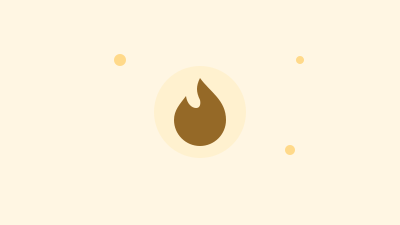
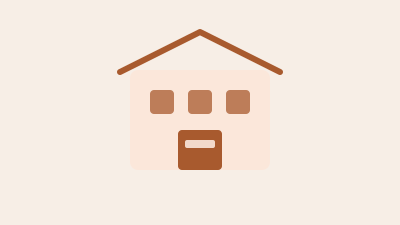

薄毛・AGA・自毛植毛の情報サイト
自分に合ったクリニックを、比較してから選ぶ。
自毛植毛はクリニックによって料金の見せ方や説明が異なり、比較が難しい分野です。 このサイトでは、費用の考え方・比較のチェックポイント・クリニックごとの調査記事を中心に、 特定のクリニックをすすめる立場ではなく、比較して選ぶための情報を整理しています。
本サイトは医療機関ではありません。治療の判断は必ず医師にご相談ください。 記事内には広告・アフィリエイトリンクを含む場合があります（広告について）。クリニックを比較する
まずはここから。比較のチェックポイントと、費用の考え方を確認できます。
注目の記事
植毛を検討している人が実際に気になりやすいテーマをピックアップしています。
注目
基礎知識

植毛のデメリットって？
メリットばかりが目立ちがちですが、留意しておきたい点も誇張せずに整理しました。
続きを読む
注目
基礎知識
自毛植毛で後悔するのはどんな人？
「思っていたのと違った」となりやすいポイントと、事前に確認しておきたいことをまとめました。
続きを読む
注目
基礎知識
植毛1000株、結局いくら？
株数と料金の関係、見積もりに含まれるもの・含まれないものを整理しました。
続きを読む
注目
クリニック個別
東京植毛クリニックの料金は？植え放題プラン・特徴・注意点を解説
公式の料金ページをもとに、「結局いくらかかるのか」「植え放題プランは何グラフトから得になるのか」を整理しました。
続きを読む
広告
ここに広告・アフィリエイトリンクが入ります。
<!-- AD PLACEHOLDER: home-pickup-bottom -->
クリニック個別記事
一覧を見る →クリニックを1院ずつ取り上げ、料金・特徴・口コミの調べ方を整理していきます。現在準備中です。
準備中

クリニック個別記事（準備中）
確認できた公式情報をもとに、記事を順次公開していきます。
準備中
クリニック個別記事（準備中）
確認できた公式情報をもとに、記事を順次公開していきます。
準備中
クリニック個別記事（準備中）
確認できた公式情報をもとに、記事を順次公開していきます。
自毛植毛の基礎知識
はじめて調べる方向けの基本情報です。比較を始める前の参考にどうぞ。